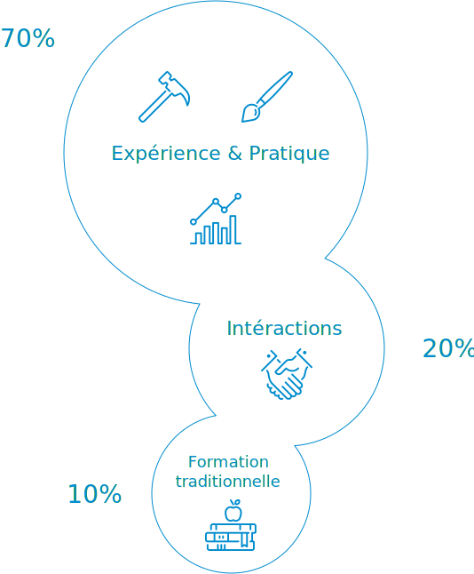
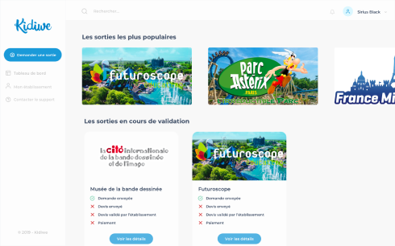
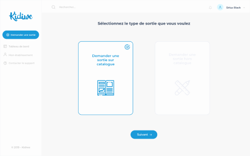
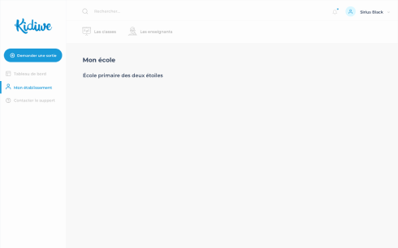
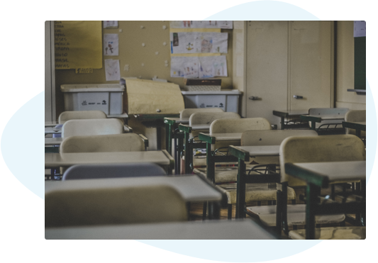

La 1ère plateforme de gestion
de la Learning Expedition
L’apprentissage par l’expérience
Qu'est-ce que la Learning Expedition ?
Une partie essentielle de l’apprentissage tout au long de la vie se fait en réalité au contact de
nouvelles expériences enrichissantes, souvent en dehors du lieu de classe ou de travail, en dehors
de la structure de l’école ou de l’entreprise.
Une Learning Expedition c’est donc sortir de son école ou de son
entreprise pour vivre une expérience d’apprentissage: apprendre une
nouvelle façon de faire, approfondir une idée ou un projet pédagogique au contact d’une expérience réelle
ou trouver une nouvelle inspiration auprès d’organisations particulièrement innovantes.
La Learning Expedition de 7 à 77 ans
Un besoin pédagogique différent en fonction de l’âge
Pour des élèves / étudiants, il s’agit souvent de compléter / illustrer un programme pédagogique par
une expérience concrète .
On appelle cela une sortie scolaire et c’est souvent la visite d’un
lieu culturel (musée), un centre de culture scientifique, un monument et moins souvent une visite au sein
d’une entreprise, un laboratoire etc…
Pour un collaborateur en entreprise, il s’agit souvent de
mettre à jour ses compétences, trouver de nouvelles idées en allant
à la rencontre de ceux qui font l’innovation (au sens large) dans un secteur particulier ou tout simplement
de sortir entre collaborateurs pour se dépayser et sortir de sa zone de confort.
Touver un titre
La sortie scolaire au cœur du dispositif pédagogique
L'intérêt de la sortie scolaire dans le cadre de la scolarité des élèves et des étudiants mais également pour
leur bien être n’est plus à démontrer.
Pourtant les enseignants ont souvent beaucoup de mal à organiser plusieurs sorties avec leurs élèves durant
l’année scolaire. En cause, une charge de travail importante, un programme chargé, une organisation compliquée
et un financement aléatoire.
Une sortie scolaire, c’est plus de 200 actions sur plus d’un mois pour organiser
une sortie de 25 élèves.
Résultat: un enseignant sur 2 n’organise pas de sorties scolaires et 1/4 des élèves en France ne sortent pas !
Kidiwe aide ainsi les enseignants à créer plus de sorties scolaires qui ont
un vrai impact pédagogique.
Touver un titre
La formation professionnelle par l’expérience et l’immersion
D’après le modèle 70:20:10, 70 % de nos connaissances et savoir-faire
viendraient de l’expérience et de la pratique, 20 % de nos interactions
sociales professionnelles et personnelles et 10 % seulement de la formation
traditionnelle, c’est-à-dire de nos études ou de formations professionnelles.

Dans un contexte de révolution industrielle et de transformation rapide des entreprises, il devient urgent de
sortir les collaborateurs de leur zone de confort pour leur permettre de découvrir et mettre en oeuvre les
dernières tendances managériales et de capter l’innovation directement ou elle se trouve.
Kidiwe accompagne les entreprises à trouver, organiser et faire vivre des
learnings expéditions qui ont une impact dans leurs métiers.
Notre plateforme
Une plateforme SaaS innovante
Le projet Kidiwe c’est avant tout un projet technologique : construire
une plateforme en ligne innovante permettant de suivre l’ensemble des étapes d’une learning expedition
(catalogue intelligent, outils d’organisation, module de suivi pédagogique, choix de la sortie,
organisation et suivi pédagogique).
C’est la première plateforme européenne dédié entièrement à la mise en place de la
Learning Expedition.

Rapprocher les différents publics et les lieux de sorties

Cette plateforme se construit autour du rapprochement des publics concernés par les Learning Expeditions
et les lieux de sorties. Permettre ainsi un musée d’avoir accès aux publics scolaires facilement, permettre
à un lieu d’innovation de pouvoir accueillir des salariés.
Fournir les outils pédagogiques pour assurer le suivi
Continuer à faire vivre ses Learning Expeditions et transformer les choses vues et entendues en compétences
professionnelles et apprentissages scolaires par le biais d’outils de suivi pédagogique et par l'intégration
de ressources pédagogiques en lien avec l’objet de la Learning Expedition.

Kidiwe, un projet, un impact social fort
L'inégalité scolaire face à l’accès à la culture
Pour permettre un meilleur accès à la culture et une éducation des jeunes, KIDIWE souhaite mettre en place des
partenariats avec des fondations qui soutiendront les enseignants en contribuant au financement direct de certaines
sorties sur la plateforme Kidiwe.
Pour beaucoup d’enseignants et de lycéens cela reste compliqué de trouver des entreprises ouvertes à l’accueil
des élèves dans le cadre de visite journalière de découverte. Parallèlement il est souvent très compliqué pour
les entreprises d’accueillir des élèves et des étudiants pour faire découvrir leurs métiers.

Les sorties d’apprentissages inter générationnelles, un outil de cohésion sociale
Kidiwe souhaite utiliser la Learning Expedition pour créer du lien inter générationnel en organisant des sorties communes entre collaborateurs d’entreprises et étudiants / élèves.